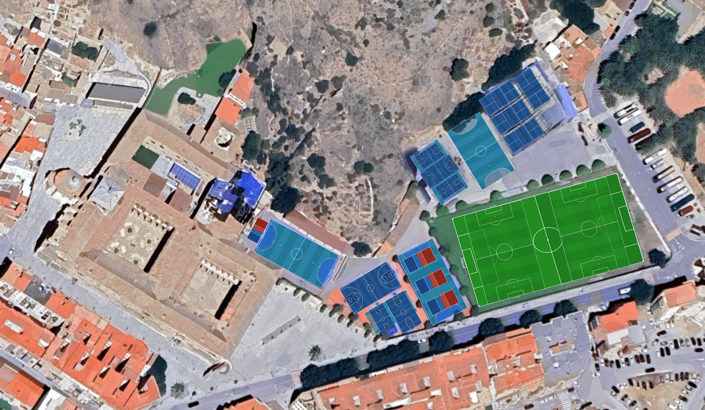

P1Pádel 1
P2Pádel 2
P3Pádel 3
P4Pádel 4
FS1Fútbol Sala 1
FS2Fútbol Sala 2
FS3Fútbol Sala 3
FS4Fútbol Sala 4
FS5Fútbol Sala 5
B1Baloncesto 1
B2Baloncesto 2
M1Minibasket 1
M2Minibasket 2
M3Minibasket 3
M4Minibasket 4
V1Voleibol 1
V2Voleibol 2
V3Voleibol 3
V4Voleibol 4
F11Fútbol 11 central
F8CFútbol 8 central
F8SFútbol 8 sur
F8NFútbol 8 norte
1Iglesia
2Consejería
3Secretaría
4Claustro del Convento
5Patio de la Universidad
6Patio de Juan XXIII
7Patio de Lourdes
8Tienda
9Biblioteca
10Gimnasio
11Entrada al salón de actos
12Comedor
13Vestuarios
14Almacén
Zonas del Colegio
23 pistas deportivas · 14 zonas edificio